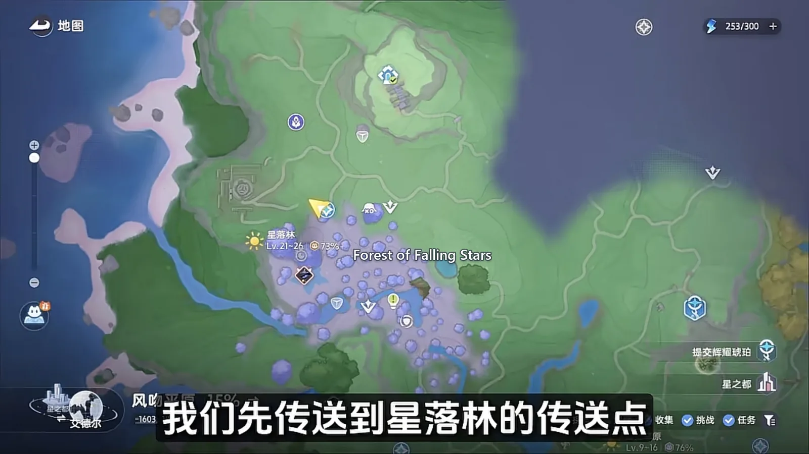
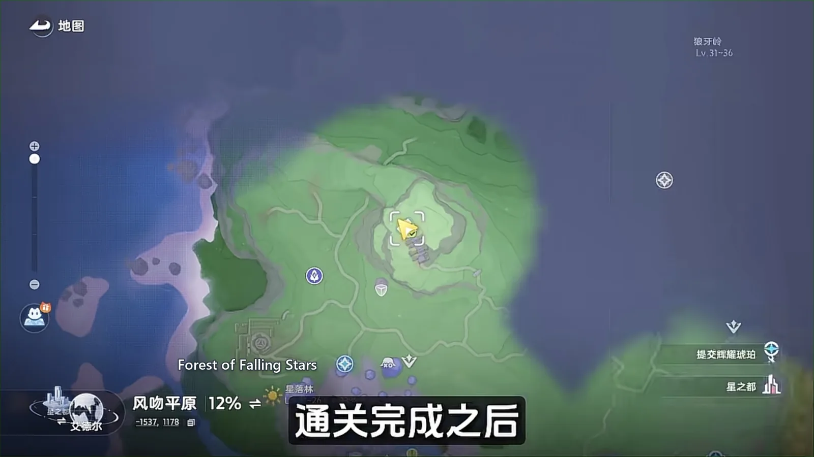
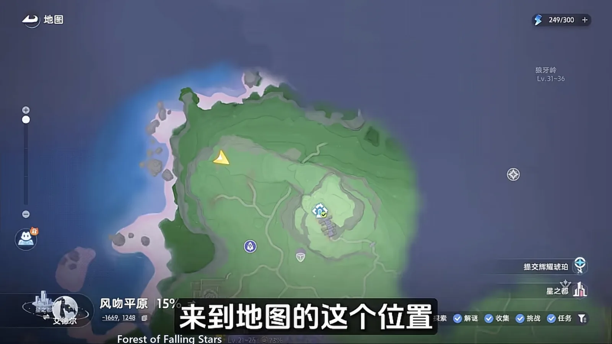
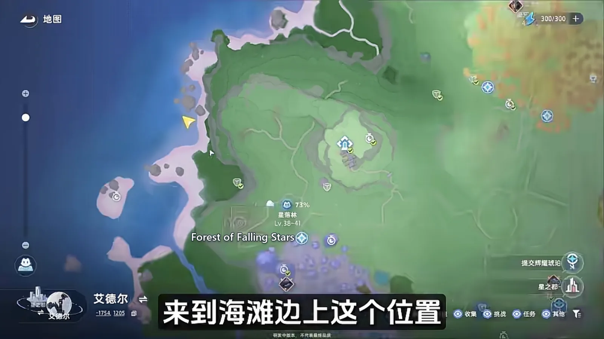
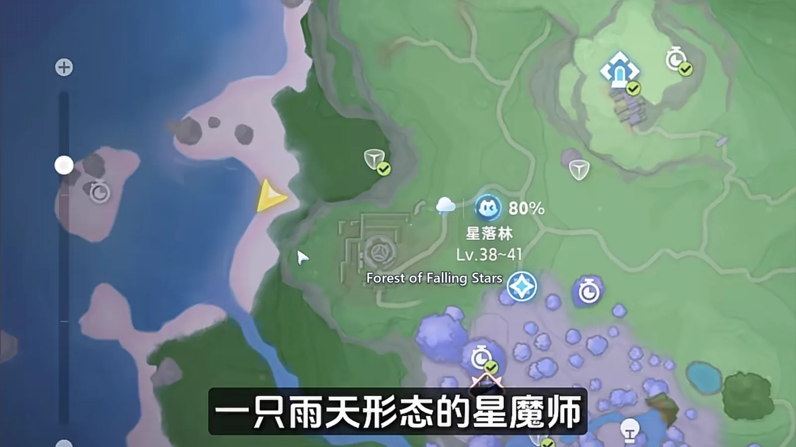
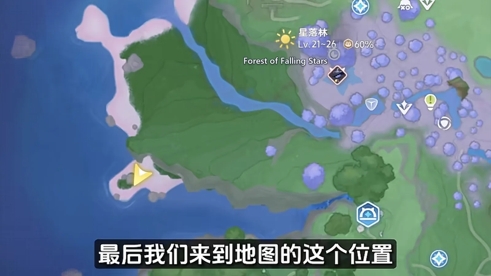

Home首页 / Guides攻略 / Forest of Falling Stars: Every Spawn Point, Walked in One Lap《全地图、全形态伊莫收集》：星落林
Checked核对于 October 16, 20262026 年 10 月 16 日
Forest of Falling Stars: Every Spawn Point, Walked in One Lap《全地图、全形态伊莫收集》：星落林
One lap of Forest of Falling Stars: the flower field at the waypoint, the two fish below the ridge, the tree that only lights up under Prismana weather, and a coastline that hands over its birds only in rain.星落林一趟跑完：落地先扫花海，翻坡收溪边的两尾鱼，再上沙坡等虹光天气，最后下到海滩，收只有下雨才会出来的那几只。
The Aniimo of Forest of Falling Stars sit at several heights at once: a flower field at the waypoint, a creek and a sand slope above it, the underground palace partway up, woodland beyond that, and a coastline along the bottom of the region. The lap is not hard to run. What holds it up is the weather — one spot only turns up under Prismana conditions, and the beach pair only come out in rain or a thunderstorm. Run it at the wrong time and you go home with noticeably less.星落林的伊莫散在几个高度上，从传送点旁边的花海，一路往北爬到林地深处，最后落到西侧的海岸。路线本身不难跑，真正卡人的是天气：虹光天气下才会刷的那个点位，以及只有下雨或雷雨才肯露面的沙滩形态和雨天形态。天气不对的时候，你这一趟能抓到的东西会明显少一截。

Land, and sweep the flower field first落地先扫一圈花海
Land at the Forest of Falling Stars waypoint and the flower field around your feet is the first stop. The Sea of Flowers Form of Pomegg (Grass · Break) and Eko (Wind · Support) are scattered through it. Both are common — take them on the way past and do not spend long here.传送到星落林的传送点，落地四周就是一片花海。花海形态的拉拉蛋（Pomegg，草 · 击破）和大耳蝠（Eko，风 · 辅助）就散在这附近，两只都算常见，落地顺手收掉，不用在这里多耗时间。
Over the ridge, and down to the creek翻过小山坡，跳下去是溪边
Climb the slope in front of you. The far side of it is where the region's Alpha, Stellarys (Dark · DPS), has its spawn, and the map marks the spot clearly. Then jump straight off the cliff: there is a creek at the bottom, and the water along it belongs to Pranky (Water · Heal) and Skippy (Water · Heal). The two fish sit close together, and once they are in you can carry on climbing.抓完往上爬，翻过前面那道小山坡，坡下就是 BOSS 星魔师（Stellarys，暗 · 输出）坐落的点位，地图上标得很清楚。接着直接朝悬崖跳下去，脚下有一条小溪，溪边这一带是顽皮鱼（Pranky，水 · 治疗）和莲顶鱼（Skippy，水 · 治疗）的地盘。两尾鱼挨得近，收完就能接着往高处走。
Up the sand slope, and wait for Prismana爬上沙坡，等一个虹光
A second climb, this time up a sand slope, takes you to a lone tree — and the ground under it is where the Prismana Form of Stellarys (Dark · DPS) spawns. It only appears if the weather is Prismana, or once a nature nurture is in place. With neither, the spot under the tree stays empty: skipping it costs you nothing, and you can come back when the conditions agree.再往上爬一段沙坡，坡上立着一棵树，树底下就是虹光形态的星魔师（Stellarys，暗 · 输出）的刷新点位。想让它出来得碰天气：只有虹光天气，或者自然生态条件满足的时候，它才会刷。条件没到，这棵树底下就是空的，跳过也不亏，回头凑齐天气再回来。
Around the underground palace: Eklue and Hummin地宫一带：侦探蝠和走调草
Head for the underground palace. Once you are through the royal hall nearby, Eklue (Wind · Support) spawns close by. The ground around the palace, and the slope dropping away below it, is also where Hummin (Grass · Break) turns up — pick it up on the way past instead of making a detour for it.往地宫驿站走，穿过王室之后，附近就会刷出一只侦探蝠（Eklue，风 · 辅助）。地宫周边，连同它下坡的那一带，还是走调草（Hummin，草 · 击破）的刷新点位，你路过顺手捉一下就行，不用专门绕路。

Deep in the woods: Irisal and Iris林地深处：花舞兰和飘飘花
From the underground palace, jump off the cliff behind it and run straight on. The patch of woodland the map marks is where the Forest Form of Irisal (Grass · DPS) and of Iris (Grass · DPS) both turn up. One stop, two register entries — take them together.抓完从地宫背后的悬崖跳下去，顺着一个方向直跑，到了地图上标出的那块林地，就是森林形态花舞兰（Irisal，草 · 输出）和飘飘花（Iris，草 · 输出）出没的地方。两朵花都在这片林子里，一次能一起收。

The beach, and the two the rain brings海滩：雨天才有长号鸥和星魔师
Run down off the woodland and you are on the beach. Both stops along this stretch are picky about the weather. The Beach Form of Tromber (Wind · Support) only appears in rain or a thunderstorm — when the weather is right it is impossible to miss the moment you reach the sand.从林地再往悬崖下跑，就到了海滩边上。这一段的两个点位都挑天气。沙滩形态的长号鸥（Tromber，风 · 辅助）要下雨或者雷雨才会现身，天气对了，海滩边一眼就能看到。

Follow the coastline on and you will run into the Rainstorm Form of Stellarys (Dark · DPS), which walks up and down the shore. If you do not meet it, circle the beach a couple of times — the condition is still rain or a thunderstorm, and without one of them they simply do not come out.顺着海岸线再往前走一段，沿路还会碰到一只雨天形态的星魔师（Stellarys，暗 · 输出），它会一直沿着海岸线来回漫步。要是没撞见，就在海边多转两圈，前提仍然是下雨或雷雨，天气不对它们不会出来。

The last stop, at the end of the coastline收尾：海岸线尽头的小号鸥
The final stop is this spot on the map, the spawn for the Beach Form of Cornet (Wind · DPS). The same beach is also covered in the Beach Form of Chirpi (Wind · Support) — very common, so sweep them up as you go, and the region's forms are all done.最后跑到地图上的这个位置，是沙滩形态的小号鸥（Cornet，风 · 输出）的刷新点。这片海滩上还散着一堆沙滩形态的口哨鸥（Chirpi，风 · 辅助），很常见，顺手一起抓掉，星落林的形态点位就全部走完了。

The order to walk it in这条路线怎么跑最省事
The whole lap runs one way — up from the waypoint, through the underground palace, then down to the sea — and never doubles back: clear the common ones in the flower field as you land; climb over the ridge for the two fish at the creek; check the tree on the sand slope for the Prismana spawn; take Eklue and Hummin around the underground palace; drop into the woodland for Irisal and Iris; and finish by sweeping Tromber, Stellarys and Cornet off the coastline. The weather is the only thing you are really waiting on: Prismana and rain, or a thunderstorm, decide how many extras you go home with, and every other stop is there the moment you arrive. If the conditions are wrong, run the first half and come back for the beach later.整条路线是从传送点往上、经地宫、再往下到海边的一条单向线，全程不用回头绕路：落地先清花海里的常见货，往上翻坡收溪边的两尾鱼，再去看沙坡树下的虹光，进地宫一带抓侦探蝠和走调草，下到林地找花舞兰、飘飘花，最后沿着海岸线一路收长号鸥、星魔师和小号鸥。真正需要卡的是天气。虹光和下雨（雷雨）这两类条件，决定的是你能多抓到几只，其余的点位只要到了地方就能收。天气不对就先跑前半段，等条件凑齐了再补后半段的海滩。
More guides相关攻略
- The Argent Strait: Every Spawn Point, Walked in One Lap《全地图、全形态伊莫收集》：鸥鸣湾 — One lap of The Argent Strait: the region's Aniimo sit on a single line, Cornet only drops once every shell is open, and the weather and an unlock each gate one more.鸥鸣湾一趟跑完：这片图的伊莫基本挤在一条线上，贝壳全开小号鸥才下来，天气和解锁各管着哪几只。
- Nimbus Fields: Every Spawn Point, Walked in One Lap《全地图、全形态伊莫收集》：云上草原 — One lap of Nimbus Fields: six Aniimo fall at the waypoint, and the rest want a time of day, rain, or a Prismana unlock before they show up at all.云上草原一趟跑完：落地脚边就凑着六个图件，剩下的分别要切夜晚、要等下雨、要解锁虹光天气，一路往前不用回头。